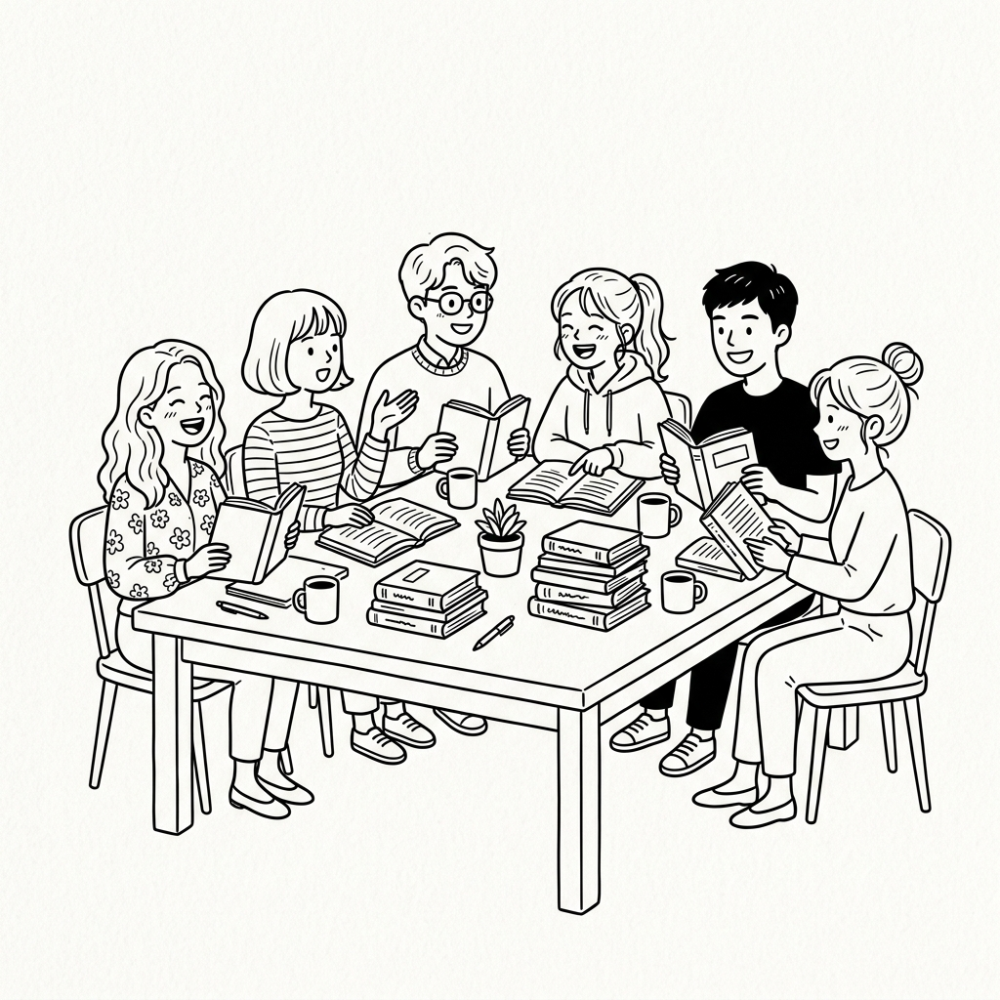

매달 한 권, 함께 읽고 이야기해요
역사를 좋아하는 사람들이
한 달에 한 번 모입니다
가볍게 읽고, 편하게 이야기 나누는 독서 모임입니다.
이번 달 책과 모임 소식을 확인해보세요.
이달의 공지
다음 모임 안내
날짜
8월 17일 (월)
시간
오후 2:00 – 5:00
장소
강남역 인근 커뮤니티룸
📌 이번 달은 책을 절반만 읽고 오셔도 괜찮아요. 처음 오시는 분도 편하게 참여하실 수 있습니다.

이번 달의 주제
자유 선택 도서
각자 원하는 책을 골라서 읽고 공유해요
이번 달은 지정 도서 없이 각자 읽고 싶었던 책을 자유롭게 골라 읽고 이야기 나누는 시간입니다. 평소 읽고 싶었던 역사 소설, 인문서, 사회과학 서적 등 어떤 장르든 좋습니다. 서로의 취향이 담긴 다양한 책들을 소개하고, 각자의 책에서 발견한 다채로운 이야기들을 함께 나누어 보아요.
자유 주제
개인 도서
취향 공유
함께 이야기 나눌 질문들
함께 이야기 나누고 싶은 내용에 대해 적어 주세요.
질문에 대한 답은 미리 생각해오시면 좋지만, 대화 중에 자연스럽게 떠오르는 이야기도 환영해요.
질문에 대한 답은 미리 생각해오시면 좋지만, 대화 중에 자연스럽게 떠오르는 이야기도 환영해요.
01
'인지혁명'이 없었다면 인류는 지금과 얼마나 다른 모습이었을까요?
02
저자는 농업혁명을 '역사상 최대의 사기'라고 표현합니다. 여러분은 동의하시나요?
03
책에서 가장 인상 깊었던 문장이나 사건을 하나씩 나눠볼까요?
멤버 독후감
이렇게 읽었어요
"역사를 이렇게 큰 그림으로 본 적이 없었는데, 다음 모임이 벌써 기다려져요."
— 지현
"혼자 읽었으면 놓쳤을 부분들을 함께 이야기하면서 다시 발견했어요."
— 민준
"친목 모임인 줄만 알았는데 토론이 은근히 깊어서 좋았습니다."
— 서연
지난 모임
우리가 함께 읽어온 책들
Reader's Club
매달 한 권, 함께 읽고 이야기 나누는 모임